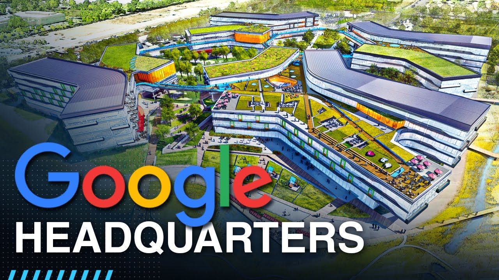
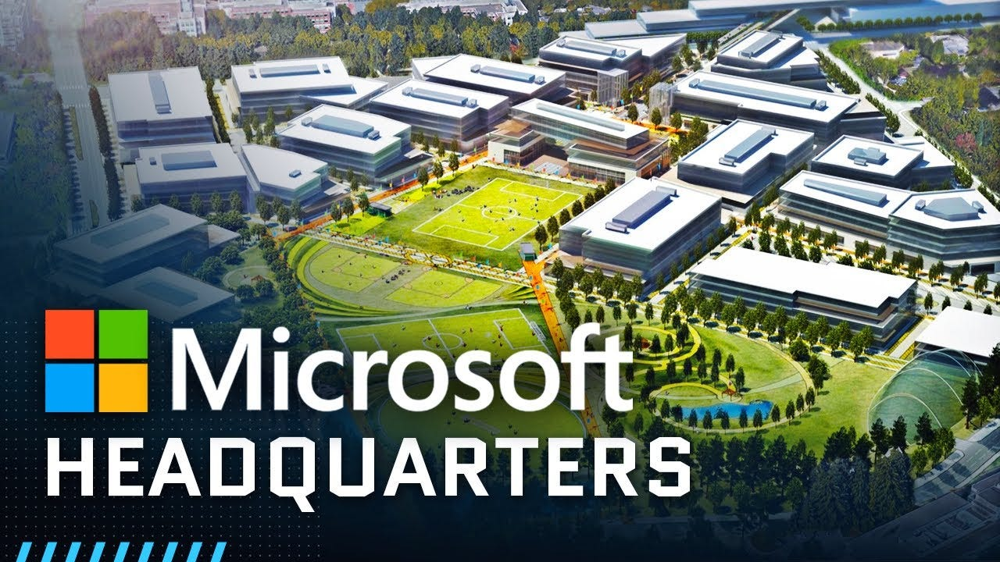

Big Tech HQ and Gaming Experience
Google, Microsoft and all other big Tech companies are now game environements


You are into the open branded world a world where tech companies like Google have their brands represented and you are here in Redmond into the campus of Google for an amazing gaming experience
your joystick or your mouse on hand you will be parkouring the realistically designed virtual campus of Google for series of challenges that will introduce you to the jobs that are being done by this companies and to the tech people working here that will help you get better and accomplished your tasked challenges. More than a game this is a learning opportunity for those who both love learning and gaming.
Your willingness of learning will matter a lot and be sure that you will gather a lot of knowledge and skills from office to office, meeting room to meeting room, building to building, and always connecting and collaborating with people. Like I was describing the real-life of a software engineer but what I am describing here is one specific gameplay of the series of gameplay of Open Branded World a new Gaming experience around brands and skills.
Maybe there is a better way for you to learn about people, jobs, departments, and functional services at Google but with this Gaming Experience, you be knowing more about Google and all the people and team here with an amazing and creative game experience that will at the same time teach you tech skill and maybe get you land you a job at Google.
Tech Companies and startups have not still leveraged the Medium of Gaming as a tool to get people to know them better and Open Branded world is about to fix this issue.
Maybe you love Google also, hopefully, you will be able to choose the Campus you want and play while learning to be a skilled person in the tech industry

The headquarters of all Tech companies like Microsoft, Apple, Amazon, Google, Facebook, Twitter … and others are now game environments filled with interesting Gameplay with Open Branded world.
This is for sure not a project for an alone startup CEO like me who is trying to end his entrepreneurial journey with a Job into one of these amazing tech companies that will be represented in the branded World.
I hope you get yourself involved in Open Branded World and that it will also have the support of all tech Companies
PS: With the description of this Game Experience you could replace Google by the name of any Big tech company like Microsoft and the result will be the same amazing gaming experience for learning while playing.
From the same Veine